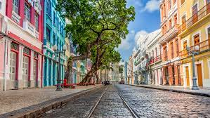
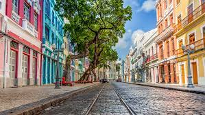

Recife, a cidade mais famosa do nordeste!
Recife, mais conhecido como Recife Antigo, é um bairro da cidade do Recife.
Brasil que corresponde à parte leste do seu Centro Histórico.
Em seu ponto mais oriental, no Porto do Recife, situa-se a Praça Rio Branco – o Marco Zero, margeada pelo encontro dos rios Capibaribe e Beberibe com o Oceano Atlântico.
Lugares Históricos
 


Conheça suas praias lindas e tranquilas.